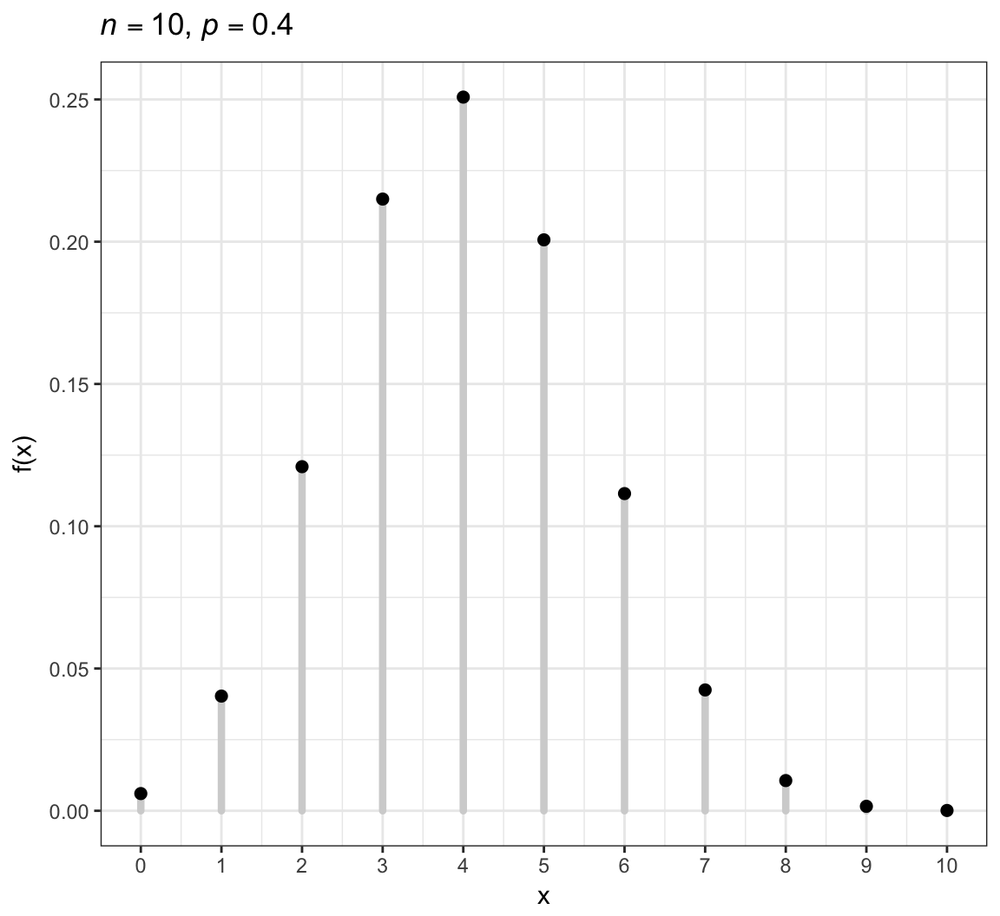
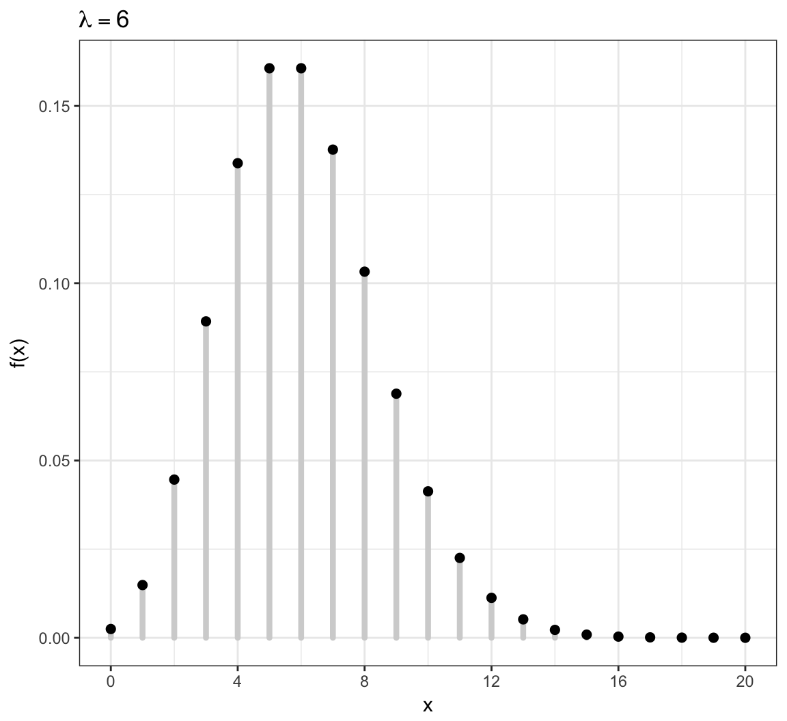
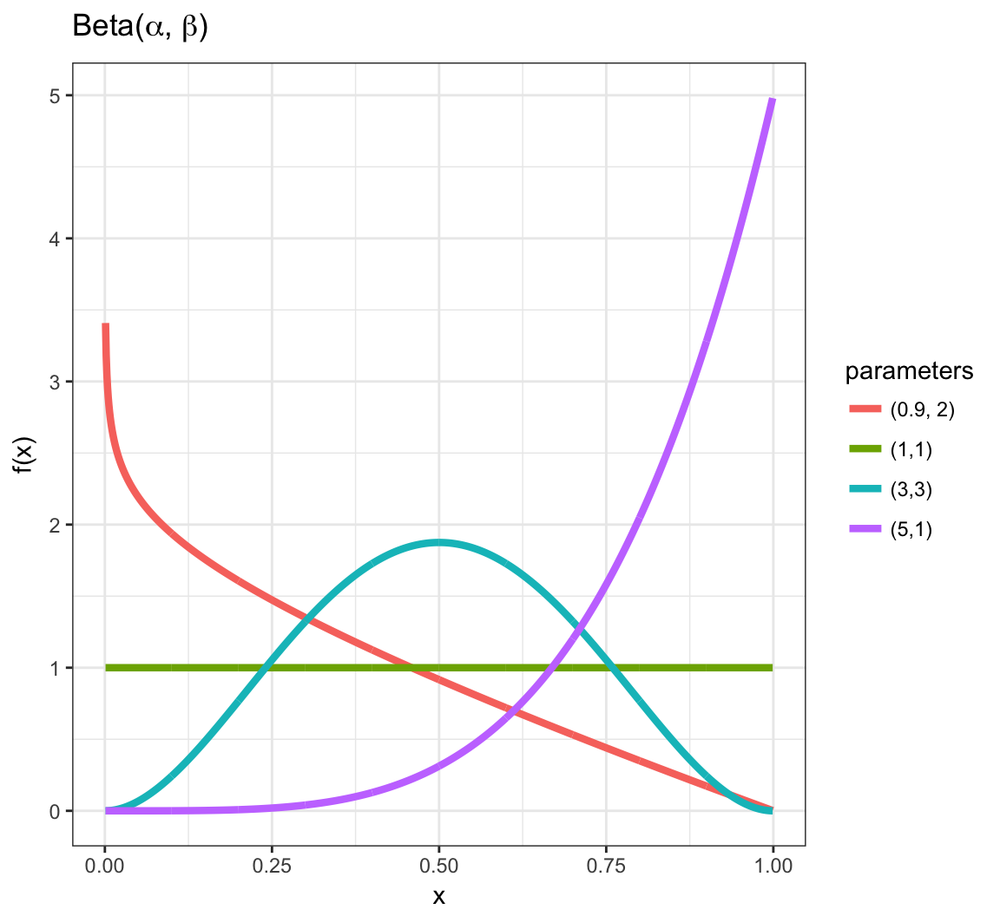
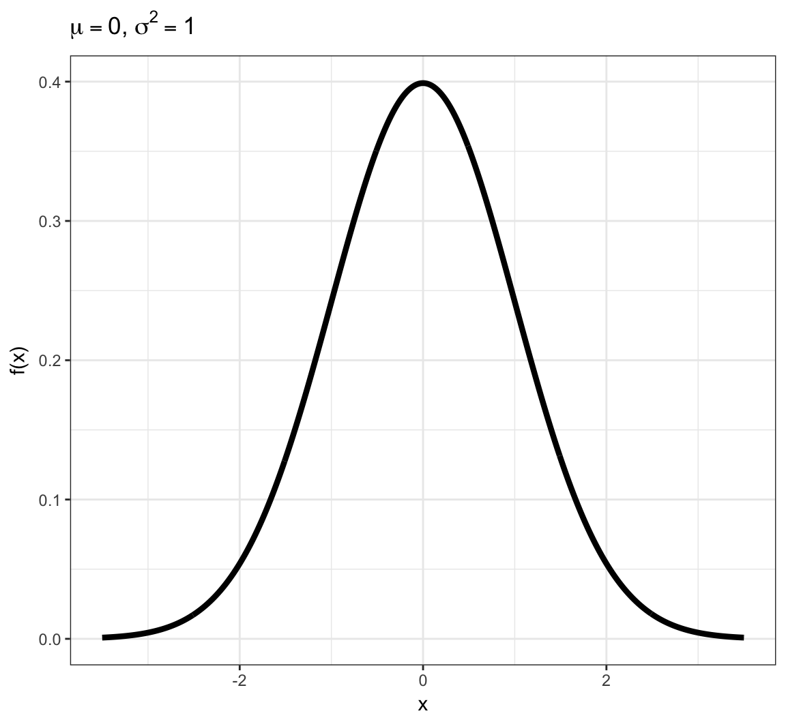

QCB 508 – Week 4
John D. Storey
Spring 2017

Probability and Statistics
Roles In Data Science
Probabilistic modeling and/or statistical inference are required in data science when the goals include:
- Characterizing randomness or “noise” in the data
- Quantifying uncertainty in models we build or decisions we make from the data
- Predicting future observations or decisions in the face of uncertainty
Central Dogma of Inference

Data Analysis Without Probability
It is possible to do data analysis without probability and formal statistical inference:
- Descriptive statistics can be reported without utilizing probability and statistical inference
- Exploratory data analysis and visualization tend to not involve probability or formal statistical inference
- Important problems in machine learning do not involve probability or statistical inference.
Probability
Sample Space
- The sample space \(\Omega\) is the set of all outcomes
- We are interested in calculating probabilities on relevant subsets of this space, called events: \(A \subseteq \Omega\)
- Examples —
- Two coin flips: \(\Omega =\) {HH, HT, TH, TT}
- Netflix movie rating: \(\Omega =\) {1, 2, 3, 4, 5}
- Number of lightning strikes on campus: \(\Omega =\) {0, 1, 2, 3, …}
- Height of adult humans in meters: \(\Omega = [0, \infty)\)
Measure Theoretic Probabilty
\[(\Omega, \mathcal{F}, \Pr)\]
- \(\Omega\) is the sample space
- \(\mathcal{F}\) is the \(\sigma\)-algebra of events where probability can be measured
- \(\Pr\) is the probability measure
Mathematical Probability
A proper mathematical formulation of a probability measure should include the following properties:
- The probability of any even \(A\) is such that \(0 \leq \Pr(A) \leq 1\)
- If \(\Omega\) is the sample space then \(\Pr(\Omega)=1\)
- Let \(A^c\) be all outcomes from \(\Omega\) that are not in \(A\) (called the complement); then \(\Pr(A) + \Pr(A^c) = 1\)
- For any \(n\) events such that \(A_i \cap A_j = \varnothing\) for all \(i \not= j\), then \(\Pr\left( \cup_{i=1}^n A_i \right) = \sum_{i=1}^n \Pr(A_i)\), where \(\varnothing\) is the empty set
Union of Two Events
The probability of two events are calculated by the following general relationship:
\[\Pr(A \cup B) = \Pr(A) + \Pr(B) - \Pr(A \cap B)\]
where we note that \(\Pr(A \cap B)\) gets counted twice in \(\Pr(A) + \Pr(B)\).
Conditional Probability
An important calclation in probability and statistics is the conditional probability. We can consider the probability of an event \(A\), conditional on the fact that we are restricted to be within event \(B\). This is defined as:
\[\Pr(A | B) = \frac{\Pr(A \cap B)}{\Pr(B)}\]
Independence
Two events \(A\) and \(B\) by definition independent when:
- \(\Pr(A | B) = \Pr(A)\)
- \(\Pr(B | A) = \Pr(B)\)
- \(\Pr(A \cap B) = \Pr(A) \Pr(B)\)
All three of these are equivalent.
Bayes Theorem
A common approach in statistics is to obtain a conditional probability of two events through the opposite conditional probability and their marginal probability. This is called Bayes Theorem:
\[\Pr(B | A) = \frac{\Pr(A | B)\Pr(B)}{\Pr(A)}\]
This forms the basis of Bayesian Inference but has more general use in carrying out probability calculations.
Law of Total Probability
For events \(A_1, \ldots, A_n\) such that \(A_i \cap A_j = \varnothing\) for all \(i \not= j\) and \(\cup_{i=1}^n A_i = \Omega\), it follows that for any event \(B\):
\[\Pr(B) = \sum_{i=1}^n \Pr(B | A_i) \Pr(A_i).\]
Random Variables
Definition
A random variable \(X\) is a function from \(\Omega\) to the real numbers:
\[X: \Omega \rightarrow \mathbb{R}\]
For any outcome in \(\Omega\), the function \(X(\omega)\) produces a real value.
We will write the range of \(X\) as
\[\mathcal{R} = \{X(\omega): \omega \in \Omega\}\]
where \(\mathcal{R} \subseteq \mathbb{R}\).
Distributon of RV
We define the probability distribution of a random variable through its probability mass function (pmf) for discrete rv’s or its probability density function (pdf) for continuous rv’s.
We can also define the distribution through its cumulative distribution function (cdf). The pmf/pdf determines the cdf, and vice versa.
Discrete Random Variables
A discrete rv \(X\) takes on a discrete set of values such as \(\{1, 2, \ldots, n\}\) or \(\{0, 1, 2, 3, \ldots \}\).
Its distribution is characterized by its pmf \[f(x) = \Pr(X = x)\] for \(x \in \{X(\omega): \omega \in \Omega \}\) and \(f(x) = 0\) otherwise.
Its cdf is \[F(y) = \Pr(X \leq y) = \sum_{x \leq y} \Pr(X = x)\] for \(y \in \mathbb{R}\).
Example: Discrete PMF

Example: Discrete CDF

Probabilities of Events Via Discrete CDF
Examples:
| Probability | CDF | PMF |
|---|---|---|
| \(\Pr(X \leq b)\) | \(F(b)\) | \(\sum_{x \leq b} f(x)\) |
| \(\Pr(X \geq a)\) | \(1-F(a-1)\) | \(\sum_{x \geq a} f(x)\) |
| \(\Pr(X > a)\) | \(1-F(a)\) | \(\sum_{x > a} f(x)\) |
| \(\Pr(a \leq X \leq b)\) | \(F(b) - F(a-1)\) | \(\sum_{a \leq x \leq b} f(x)\) |
| \(\Pr(a < X \leq b)\) | \(F(b) - F(a)\) | \(\sum_{a < x \leq b} f(x)\) |
Continuous Random Variables
A continuous rv \(X\) takes on a continuous set of values such as \([0, \infty)\) or \(\mathbb{R} = (-\infty, \infty)\).
The probability that \(X\) takes on any specific value is 0; but the probability it lies within an interval can be non-zero. Its pdf \(f(x)\) therefore gives an infinitesimal, local, relative probability.
Its cdf is \[F(y) = \Pr(X \leq y) = \int_{-\infty}^y f(x) dx\] for \(y \in \mathbb{R}\).
Example: Continuous PDF

Example: Continuous CDF

Probabilities of Events Via Continuous CDF
Examples:
| Probability | CDF | |
|---|---|---|
| \(\Pr(X \leq b)\) | \(F(b)\) | \(\int_{-\infty}^{b} f(x) dx\) |
| \(\Pr(X \geq a)\) | \(1-F(a)\) | \(\int_{a}^{\infty} f(x) dx\) |
| \(\Pr(X > a)\) | \(1-F(a)\) | \(\int_{a}^{\infty} f(x) dx\) |
| \(\Pr(a \leq X \leq b)\) | \(F(b) - F(a)\) | \(\int_{a}^{b} f(x) dx\) |
| \(\Pr(a < X \leq b)\) | \(F(b) - F(a)\) | \(\int_{a}^{b} f(x) dx\) |
Example: Continuous RV Event

Note on PMFs and PDFs
PMFs and PDFs are defined as \(f(x)=0\) outside of the range of \(X\), \(\mathcal{R} = \{X(\omega): \omega \in \Omega\}\). That is:
Also, they sum or integrate to 1:
\[\sum_{x \in \mathcal{R}} f(x) = 1\]
\[\int_{x \in \mathcal{R}} f(x) dx = 1\]
Using measure theory, we can consider both types of rv’s in one framework, and we would write: \[\int_{-\infty}^{\infty} dF(x) = 1\]
Note on CDFs
Properties of all cdf’s, regardless of continuous or discrete underlying rv:
- They are right continuous with left limits
- \(\lim_{x \rightarrow \infty} F(x) = 1\)
- \(\lim_{x \rightarrow -\infty} F(x) = 0\)
- The right derivative of \(F(x)\) equals \(f(x)\)
Sample Vs Population Statistics
We earlier discussed measures of center and spread for a set of data, such as the mean and the variance.
Analogous measures exist for probability distributions.
These are distinguished by calling those on data “sample” measures (e.g., sample mean) and those on probability distributions “population” measures (e.g., population mean).
Expected Value
The expected value, also called the “population mean”, is a measure of center for a rv. It is calculated in a fashion analogous to the sample mean:
\[\begin{align*} & \operatorname{E}[X] = \sum_{x \in \mathcal{R}} x \ f(x) & \mbox{(discrete)} \\ & \operatorname{E}[X] = \int_{-\infty}^{\infty} x \ f(x) \ dx & \mbox{(continuous)} \\ & \operatorname{E}[X] = \int_{-\infty}^{\infty} x \ dF(x) & \mbox{(general)} \end{align*}\]Variance
The variance, also called the “population variance”, is a measure of spread for a rv. It is calculated in a fashion analogous to the sample variance:
\[{\operatorname{Var}}(X) = {\operatorname{E}}\left[\left(X-{\operatorname{E}}[X]\right)^2\right]; \quad \quad {\rm SD}(X) = \sqrt{{\operatorname{Var}}(X)}\]
\[{\operatorname{Var}}(X) = \sum_{x \in \mathcal{R}} \left(x-{\operatorname{E}}[X]\right)^2 \ f(x) \ \ \ \ \mbox{(discrete)}\]
\[{\operatorname{Var}}(X) = \int_{-\infty}^{\infty} \left(x-{\operatorname{E}}[X]\right)^2 \ f(x) \ dx \ \ \ \ \mbox{(continuous)}\]
Covariance
The covariance, also called the “population covariance”, measures how two rv’s covary. It is calculated in a fashion analogous to the sample covariance:
\[{\operatorname{Cov}}(X, Y) = \operatorname{E} \left[ (X - \operatorname{E}[X]) (Y - \operatorname{E}[Y]) \right]\]
Note that \({\operatorname{Cov}}(X, X) = {\operatorname{Var}}(X)\).
Correlation
The population correlation is calculated analogously to the sample correlation:
\[\operatorname{Cor}(X, Y) = \frac{{\operatorname{Cov}}(X, Y)}{\operatorname{SD}(X)\operatorname{SD}(Y)}\]
Moment Generating Functions
The moment generating function (mgf) of a rv is defined to be
\[m(t) = \operatorname{E}\left[e^{tX}\right]\]
whenever this expecation exists.
Under certain conditions, the moments of a rv can then be obtained by:
\[\operatorname{E} \left[ X^k \right] = \frac{d^k}{dt^k}m(0).\]
Random Variables in R
The pmf/pdf, cdf, quantile function, and random number generator for many important random variables are built into R. They all follow the form, where <name> is replaced with the name used in R for each specific distribution:
d<name>: pmf or pdfp<name>: cdfq<name>: quantile function or inverse cdfr<name>: random number generator
To see a list of random variables, type ?Distributions in R.
Discrete RVs
Uniform (Discrete)
This simple rv distribution assigns equal probabilities to a finite set of values:
\[X \sim \mbox{Uniform}\{1, 2, \ldots, n\}\]
\[\mathcal{R} = \{1, 2, \ldots, n\}\]
\[f(x; n) = 1/n \mbox{ for } x \in \mathcal{R}\]
\[{\operatorname{E}}[X] = \frac{n+1}{2}, \ {\operatorname{Var}}(X) = \frac{n^2-1}{12}\]
Uniform (Discrete) PMF

Uniform (Discrete) in R
There is no family of functions built into R for this distribution since it is so simple. However, it is possible to generate random values via the sample function:
> n <- 20L
> sample(x=1:n, size=10, replace=TRUE)
[1] 5 13 2 14 15 19 15 15 3 14
>
> x <- sample(x=1:n, size=1e6, replace=TRUE)
> mean(x) - (n+1)/2
[1] 0.005001
> var(x) - (n^2-1)/12
[1] -0.003801764Bernoulli
A single success/failure event, such as heads/tails when flipping a coin or survival/death.
\[X \sim \mbox{Bernoulli}(p)\]
\[\mathcal{R} = \{0, 1\}\]
\[f(x; p) = p^x (1-p)^{1-x} \mbox{ for } x \in \mathcal{R}\]
\[{\operatorname{E}}[X] = p, \ {\operatorname{Var}}(X) = p(1-p)\]
Binomial
An extension of the Bernoulli distribution to simultaneously considering \(n\) independent success/failure trials and counting the number of successes.
\[X \sim \mbox{Binomial}(n, p)\]
\[\mathcal{R} = \{0, 1, 2, \ldots, n\}\]
\[f(x; p) = {n \choose x} p^x (1-p)^{n-x} \mbox{ for } x \in \mathcal{R}\]
\[{\operatorname{E}}[X] = np, \ {\operatorname{Var}}(X) = np(1-p)\]
Note that \({n \choose x} = \frac{n!}{x! (n-x)!}\) is the number of unique ways to choose \(x\) items from \(n\) without respect to order.
Binomial PMF

Binomial in R
> str(dbinom)
function (x, size, prob, log = FALSE) > str(pbinom)
function (q, size, prob, lower.tail = TRUE, log.p = FALSE) > str(qbinom)
function (p, size, prob, lower.tail = TRUE, log.p = FALSE) > str(rbinom)
function (n, size, prob) Poisson
Models the number of occurrences of something within a defined time/space period, where the occurrences are independent. Examples: the number of lightning strikes on campus in a given year; the number of emails received on a given day.
\[X \sim \mbox{Poisson}(\lambda)\]
\[\mathcal{R} = \{0, 1, 2, 3, \ldots \}\]
\[f(x; \lambda) = \frac{\lambda^x e^{-\lambda}}{x!} \mbox{ for } x \in \mathcal{R}\]
\[{\operatorname{E}}[X] = \lambda, \ {\operatorname{Var}}(X) = \lambda\]
Poisson PMF

Poisson in R
> str(dpois)
function (x, lambda, log = FALSE) > str(ppois)
function (q, lambda, lower.tail = TRUE, log.p = FALSE) > str(qpois)
function (p, lambda, lower.tail = TRUE, log.p = FALSE) > str(rpois)
function (n, lambda) Continuous RVs
Uniform (Continuous)
Models the scenario where all values in the unit interval [0,1] are equally likely.
\[X \sim \mbox{Uniform}(0,1)\]
\[\mathcal{R} = [0,1]\]
\[f(x) = 1 \mbox{ for } x \in \mathcal{R}\]
\[F(y) = y \mbox{ for } y \in \mathcal{R}\]
\[{\operatorname{E}}[X] = 1/2, \ {\operatorname{Var}}(X) = 1/12\]
Uniform (Continuous) PDF

Uniform (Continuous) in R
> str(dunif)
function (x, min = 0, max = 1, log = FALSE) > str(punif)
function (q, min = 0, max = 1, lower.tail = TRUE, log.p = FALSE) > str(qunif)
function (p, min = 0, max = 1, lower.tail = TRUE, log.p = FALSE) > str(runif)
function (n, min = 0, max = 1) Exponential
Models a time to failure and has a “memoryless property”.
\[X \sim \mbox{Exponential}(\lambda)\]
\[\mathcal{R} = [0, \infty)\]
\[f(x; \lambda) = \lambda e^{-\lambda x} \mbox{ for } x \in \mathcal{R}\]
\[F(y; \lambda) = 1 - e^{-\lambda y} \mbox{ for } y \in \mathcal{R}\]
\[{\operatorname{E}}[X] = \frac{1}{\lambda}, \ {\operatorname{Var}}(X) = \frac{1}{\lambda^2}\]
Exponential PDF
Exponential in R
> str(dexp)
function (x, rate = 1, log = FALSE) > str(pexp)
function (q, rate = 1, lower.tail = TRUE, log.p = FALSE) > str(qexp)
function (p, rate = 1, lower.tail = TRUE, log.p = FALSE) > str(rexp)
function (n, rate = 1) Beta
Yields values in \((0,1)\), so often used to generate random probabilities, such as the \(p\) in Bernoulli\((p)\).
\[X \sim \mbox{Beta}(\alpha,\beta) \mbox{ where } \alpha, \beta > 0\]
\[\mathcal{R} = (0,1)\]
\[f(x; \alpha, \beta) = \frac{\Gamma(\alpha + \beta)}{\Gamma(\alpha) \Gamma(\beta)}x^{\alpha-1}(1-x)^{\beta - 1} \mbox{ for } x \in \mathcal{R}\]
where \(\Gamma(z) = \int_{0}^{\infty} x^{z-1} e^{-x} dx\).
\[{\operatorname{E}}[X] = \frac{\alpha}{\alpha + \beta}, \ {\operatorname{Var}}(X) = \frac{\alpha \beta}{(\alpha + \beta)^2 (\alpha + \beta + 1)}\]
Beta PDF

Beta in R
> str(dbeta) #shape1=alpha, shape2=beta
function (x, shape1, shape2, ncp = 0, log = FALSE) > str(pbeta)
function (q, shape1, shape2, ncp = 0, lower.tail = TRUE,
log.p = FALSE) > str(qbeta)
function (p, shape1, shape2, ncp = 0, lower.tail = TRUE,
log.p = FALSE) > str(rbeta)
function (n, shape1, shape2, ncp = 0) Normal
Due to the Central Limit Theorem (covered later), this “bell curve” distribution is often observed in properly normalized real data.
\[X \sim \mbox{Normal}(\mu, \sigma^2)\]
\[\mathcal{R} = (-\infty, \infty)\]
\[f(x; \mu, \sigma^2) = \frac{1}{\sqrt{2 \pi \sigma^2}} e^{-\frac{(x-\mu)^2}{2 \sigma^2}} \mbox{ for } x \in \mathcal{R}\]
\[{\operatorname{E}}[X] = \mu, \ {\operatorname{Var}}(X) = \sigma^2\]
Normal PDF

Normal in R
> str(dnorm) #notice it requires the STANDARD DEVIATION, not the variance
function (x, mean = 0, sd = 1, log = FALSE) > str(pnorm)
function (q, mean = 0, sd = 1, lower.tail = TRUE, log.p = FALSE) > str(qnorm)
function (p, mean = 0, sd = 1, lower.tail = TRUE, log.p = FALSE) > str(rnorm)
function (n, mean = 0, sd = 1) Sums of Random Variables
Linear Transformation of a RV
Suppose that \(X\) is a random variable and that \(a\) and \(b\) are constants. Then:
\[{\operatorname{E}}\left[a + bX \right] = a + b {\operatorname{E}}[X]\]
\[{\operatorname{Var}}\left(a + bX \right) = b^2 {\operatorname{Var}}(X)\]
Sums of Independent RVs
If \(X_1, X_2, \ldots, X_n\) are independent random variables, then:
\[{\operatorname{E}}\left[ \sum_{i=1}^n X_i \right] = \sum_{i=1}^n {\operatorname{E}}[X_i]\]
\[{\operatorname{Var}}\left( \sum_{i=1}^n X_i \right) = \sum_{i=1}^n {\operatorname{Var}}(X_i)\]
Sums of Dependent RVs
If \(X_1, X_2, \ldots, X_n\) are independent random variables, then:
\[{\operatorname{E}}\left[ \sum_{i=1}^n X_i \right] = \sum_{i=1}^n {\operatorname{E}}[X_i]\]
\[{\operatorname{Var}}\left( \sum_{i=1}^n X_i \right) = \sum_{i=1}^n {\operatorname{Var}}(X_i) + 2 \sum_{i \not= j} {\operatorname{Cov}}(X_i, X_j)\]
Means of Random Variables
Suppose \(X_1, X_2, \ldots, X_n\) are independent and identically distributed (iid) random variables. Let \(\overline{X}_n = \frac{1}{n} \sum_{i=1}^n X_i\) be their sample mean. Then:
\[{\operatorname{E}}\left[\overline{X}_n \right] = {\operatorname{E}}[X_i]\]
\[{\operatorname{Var}}\left(\overline{X}_n \right) = \frac{1}{n}{\operatorname{Var}}(X_i)\]
Convergence of Random Variables
Sequence of RVs
Let \(Z_1, Z_2, \ldots\) be an infinite sequence of rv’s.
An important example is
\[Z_n = \overline{X}_n = \frac{\sum_{i=1}^n X_i}{n}.\]
It is useful to be able to determine a limiting value or distribution of \(\{Z_i\}\).
Convergence in Distribution
\(\{Z_i\}\) converges in distribution to \(Z\), written
\[Z_n \stackrel{D}{\longrightarrow} Z\]
if
\[F_{Z_n}(y) = \Pr(Z_n \leq y) \rightarrow \Pr(Z \leq y) = F_{Z}(y)\]
as \(n \rightarrow \infty\) for all \(y \in \mathbb{R}\).
Convergence in Probability
\(\{Z_i\}\) converges in probability to \(Z\), written
\[Z_n \stackrel{P}{\longrightarrow} Z\]
if
\[\Pr(|Z_n - Z| \leq \epsilon) \rightarrow 1\]
as \(n \rightarrow \infty\) for all \(\epsilon > 0\).
Note that it may also be the case that \(Z_n \stackrel{P}{\longrightarrow} \theta\) for a fixed, nonrandom value \(\theta\).
Almost Sure Convergence
\(\{Z_i\}\) converges almost surely (or “with probability 1”) to \(Z\), written
\[Z_n \stackrel{a.s.}{\longrightarrow} Z\]
if
\[\Pr\left(\{\omega: |Z_n(\omega) - Z(\omega)| \stackrel{n \rightarrow \infty}{\longrightarrow} 0 \}\right) = 1.\]
Note that it may also be the case that \(Z_n \stackrel{a.s.}{\longrightarrow} \theta\) for a fixed, nonrandom value \(\theta\).
Strong Law of Large Numbers
Suppose \(X_1, X_2, \ldots, X_n\) are iid rv’s with population mean \({\operatorname{E}}[X_i] = \mu\) where \({\operatorname{E}}[|X_i|] < \infty\). Then
\[\overline{X}_n \stackrel{a.s.}{\longrightarrow} \mu.\]
Central Limit Theorem
Suppose \(X_1, X_2, \ldots, X_n\) are iid rv’s with population mean \({\operatorname{E}}[X_i] = \mu\) and variance \({\operatorname{Var}}(X_i) = \sigma^2\). Then as \(n \rightarrow \infty\),
\[\sqrt{n}(\overline{X}_n - \mu) \stackrel{D}{\longrightarrow} \mbox{Normal}(0, \sigma^2)\]
\[\frac{\overline{X}_n - \mu}{\sigma/\sqrt{n}} \stackrel{D}{\longrightarrow} \mbox{Normal}(0, 1)\]
Example: Calculations
Let \(X_1, X_2, \ldots, X_{40}\) be iid Poisson(\(\lambda\)) with \(\lambda=6\).
We will form \(\sqrt{40}(\overline{X} - 6)\) over 10,000 realizations and compare their distribution to a Normal(0, 6) distribution.
> x <- replicate(n=1e4, expr=rpois(n=40, lambda=6),
+ simplify="matrix")
> x_bar <- apply(x, 2, mean)
> clt <- sqrt(40)*(x_bar - 6)
>
> df <- data.frame(clt=clt, x = seq(-18,18,length.out=1e4),
+ y = dnorm(seq(-18,18,length.out=1e4),
+ sd=sqrt(6)))Example: Plot
> ggplot(data=df) +
+ geom_histogram(aes(x=clt, y=..density..), color="blue",
+ fill="lightgray", binwidth=0.75) +
+ geom_line(aes(x=x, y=y), size=1.5)
Joint Distributions
Bivariate Random Variables
For a pair of rv’s \(X\) and \(Y\) defined on the same probability space, we can define their joint pmf or pdf. For the discrete case,
\[\begin{align*} f(x, y) & = \Pr(\{\omega: X(\omega) = x\} \cap \{\omega: Y(\omega) = y\}) \\ \ & = \Pr(X=x, Y=y). \end{align*}\]The joint pdf is defined analogously for continuous rv’s.
Events for Bivariate RVs
Let \(A_x \times A_y \subseteq \mathbb{R} \times \mathbb{R}\) be an event. Then \(\Pr(X \in A_x, Y \in A_y)\) is calculated by:
\[\begin{align*} & \sum_{x \in A_x} \sum_{y \in A_y} f(x, y) & \mbox{(discrete)} \\ & \int_{x \in A_x} \int_{y \in A_y} f(x, y) dy dx & \mbox{(continuous)} \\ & \int_{x \in A_x} \int_{y \in A_y} f(x, y) dF_Y(y) dF_{X}(x) & \mbox{(general)} \end{align*}\]Marginal Distributions
We can calculate the marginal distribution of \(X\) (or \(Y\)) from their joint distribution:
\[f(x) = \int_{-\infty}^{\infty} f(x, y) dF_Y(y)\]
Independent Random Variables
Two rv’s are independent when their joint pmf or pdf factor:
\[f(x,y) = f(x) f(y)\]
This means, for example in the continuous case,
\[\begin{align*} \Pr(X \in A_x, Y \in A_y) & = \int_{x \in A_x} \int_{y \in A_y} f(x, y) dy dx \\ \ & = \int_{x \in A_x} \int_{y \in A_y} f(x) f(y) dy dx \\ \ & = \Pr(X \in A_x) \Pr(Y \in A_y) \end{align*}\]Conditional Distributions
We can define the conditional distribution of \(X\) given \(Y\) as follows. The conditional rv \(X | Y \sim F_{X|Y}\) with conditional pmf or pdf for \(X | Y=y\) given by
\[ f(x | y) = \frac{f(x, y)}{f(y)}. \]
Conditional Moments
Law of Total Variation
Multivariate Distributions
MV Expected Value
MV Variance-Covariance Matrix
Multivariate RVs
Multinomial
Multivariate Normal
Dirichlet
Likelihood
Likelihood Function
Log-Likelihood Function
IID Log-Likelihood
Sufficient Statistics
Factorization Theorem
Likelihood Principle
Maximum Likelihood
Going Further
If this interests you, be sure to read about:
- Minimal sufficient statistics
- Complete sufficient statistics
- Ancillary statistics
- Basu’s theorem
Exponential Family Distributions
Definition
Example: Bernoulli
Example: Normal
Natural Parameter
Natural Single Parameter EFD
Calculating Moments
Example: Bernoulli
Example: Normal
Maximum Likelihood
Extras
Source
Session Information
> sessionInfo()
R version 3.3.2 (2016-10-31)
Platform: x86_64-apple-darwin13.4.0 (64-bit)
Running under: macOS Sierra 10.12.3
locale:
[1] en_US.UTF-8/en_US.UTF-8/en_US.UTF-8/C/en_US.UTF-8/en_US.UTF-8
attached base packages:
[1] stats graphics grDevices utils datasets methods
[7] base
other attached packages:
[1] dplyr_0.5.0 purrr_0.2.2 readr_1.0.0
[4] tidyr_0.6.1 tibble_1.2 ggplot2_2.2.1
[7] tidyverse_1.1.1 knitr_1.15.1 magrittr_1.5
[10] devtools_1.12.0
loaded via a namespace (and not attached):
[1] Rcpp_0.12.9 plyr_1.8.4 forcats_0.2.0
[4] tools_3.3.2 digest_0.6.12 lubridate_1.6.0
[7] jsonlite_1.2 evaluate_0.10 memoise_1.0.0
[10] nlme_3.1-131 gtable_0.2.0 lattice_0.20-34
[13] psych_1.6.12 DBI_0.5-1 yaml_2.1.14
[16] parallel_3.3.2 haven_1.0.0 xml2_1.1.1
[19] withr_1.0.2 stringr_1.1.0 httr_1.2.1
[22] revealjs_0.8 hms_0.3 rprojroot_1.2
[25] grid_3.3.2 R6_2.2.0 readxl_0.1.1
[28] foreign_0.8-67 rmarkdown_1.3 modelr_0.1.0
[31] reshape2_1.4.2 backports_1.0.5 scales_0.4.1
[34] htmltools_0.3.5 rvest_0.3.2 assertthat_0.1
[37] mnormt_1.5-5 colorspace_1.3-2 labeling_0.3
[40] stringi_1.1.2 lazyeval_0.2.0 munsell_0.4.3
[43] broom_0.4.2